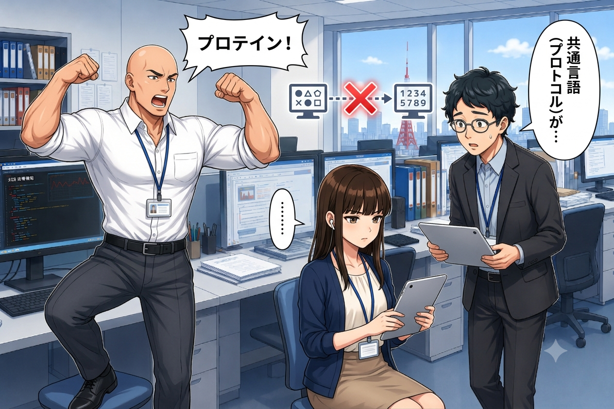
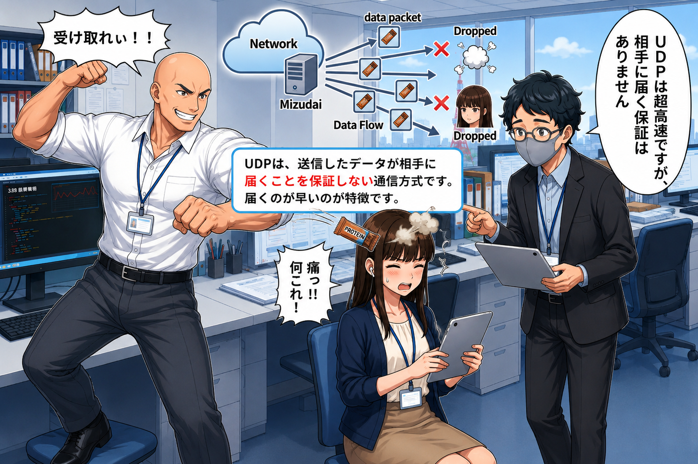
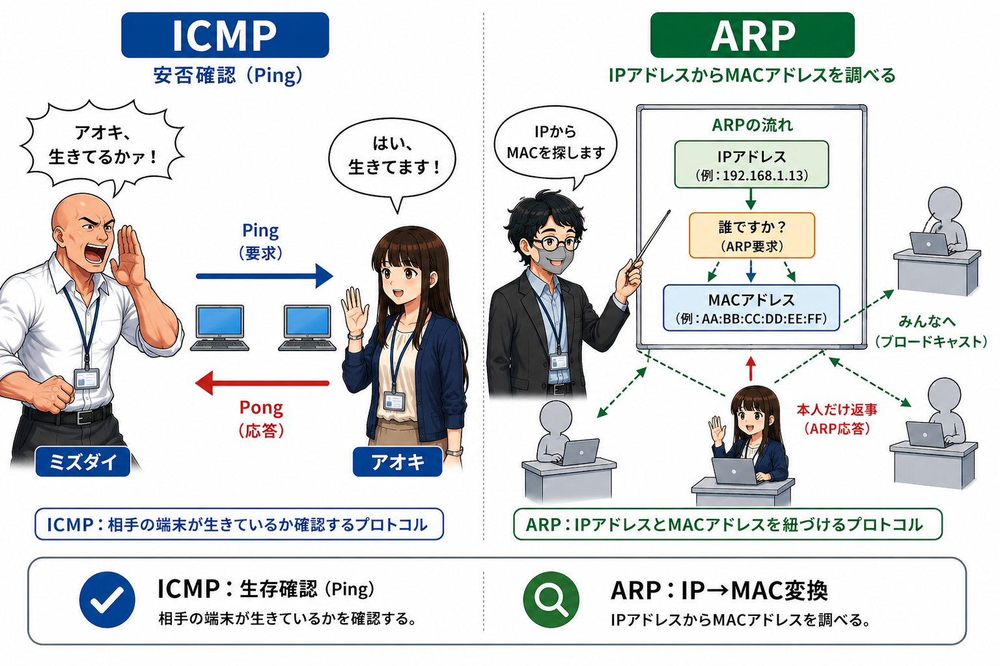

プロローグ：噛み合わないやり取りとプロトコル
情シス部での研修中、アオキ（25）は他部署との仕事の手順に戸惑っていた。
こちらがデータを送ったつもりでも、相手から「どういう手順で開けばいいのか分からない」と問い合わせが来るのだ。

【ep05_01.png】プロトコル（共通の約束事）が一致しないと通信できないイメージ
アオキ
「メールを送ったはずなのに、相手から『うちのシステムじゃ開けない』って言われちゃいました。同じコンピュータ同士なのに、どうしてすぐに繋がらないんですかね……」
ホシノ
「ふふ、それはお互いの通信のルールが一致していないからですね。コンピュータ同士が会話をするための共通の約束事を、**プロトコル（Protocol）** と呼びます。」
ミズダイ
「そう！ プロトコルとはいわば『ビジネスマナー』や『共通の言語』だ！ 私が『プロテイン！』と叫んだら、アオキくんが『バー！』と返す！ このやり取りが成立するのも、我が部の共通プロトコルがあるからだな！」
アオキ
「そんなコールアンドレスポンスのルール作った覚えはありません。でも、ルール（プロトコル）がないと、データがごちゃごちゃになって解読できないのは分かりました」
ホシノ
「ええ。インターネットの世界では、このプロトコルが何重にも組み合わさって通信を支えています。今日はその代表的なものを見ていきましょう。」
受領印付きの重要書類（TCP）
ホシノがデスクから厚い重要契約書を取り出した。
ホシノ
「例えば、この契約書を総務部に届けるとします。絶対に紛失は許されません。こういう時に使われるのが **TCP（Transmission Control Protocol）** というプロトコルです。」
ホシノ
「はい。TCPでは、まず送信する前に相手と連絡を取り合い、準備ができているか確認します。これを **3ウェイハンドシェイク** と呼びます。
1. 送信側（アオキ）が『送ってもいいですか？（SYN）』と尋ねる。
2. 受信側（総務部）が『いいですよ、こちらのデータも送っていいですか？（SYN-ACK）』と答える。
3. 送信側（アオキ）が『了解しました、では送ります（ACK）』と合意する。
この3工程を経て、ようやくデータの送信を開始するのです」
ミズダイ
「さらに！ TCPはデータを細かく分けた『パケット』を送るたびに、『今送ったパケット、ちゃんと届いたか？』と受領確認（ACK）を求める！ もし途中でパケットが紛失した場合は、容赦なく再送させるのだ！ まさに『受領印付きの書留郵便』だな！」
アオキ
「めちゃくちゃ手堅いですね。それなら絶対にデータが壊れたり無くなったりしなさそうです」
ホシノ
「その通りです。ただ、手順が非常に丁寧な分、通信速度（オーバーヘッド）という点では少し遅くなってしまいます」
飛んでくるプロテイン（UDP）
すると、デスクの向こう側からミズダイ課長が立ち上がった。
ミズダイ
「フハハ！ 丁寧な手続きなど大胸筋が許さん！ スピードこそパワー！ アオキ、受け取れェェーッ！！」
ビュッ！と風を切る音とともに、ミズダイ課長の剛腕からプロテインバーの小袋がアオキに向かって投じられた。
スマホをいじっていたアオキは反応できず、プロテインバーはアオキの額にクリーンヒットして床に転がった。
アオキ
「いたっ！！！ な、何するんですか課長！ 痛いですし、プロテインバーが粉々になりましたよ！」
ミズダイ
「これぞ **UDP（User Datagram Protocol）** なのだッ！！」
アオキ
「いや、ただの投げっぱなしの暴力ですよ！」
ホシノ
「ふふ、課長は体当たりでUDPを教えてくださったのですね（にっこり）。
UDPは、相手の受け入れ態勢を確認せず、届いたかどうかの受領確認も行いません。ひたすらデータを一方的に『投げつける』プロトコルです」
アオキ
「届く保証がないってことですか？ それ、使い道あるんですか？」
ホシノ
「大いにありますよ。例えば、動画のライブ配信やオンライン音声通話などです。多少データが抜け落ちて（画像が一瞬乱れたり、音が途切れたりして）も、一時停止して再送を待つより、リアルタイムで次々にデータを流し続けた方がスムーズですよね。このように、信頼性よりも『速度やリアルタイム性』を重視する場面でUDPが使われます」
アオキ
「なるほど。再送を待っていると動画がカクカクしちゃいますもんね。投げっぱなしだけど速い、それがUDPですか」

【ep05_02.png】届く保証はないが超高速なUDP（ポイ投げのイメージ）
安否確認の点呼と、座席表での人探し
アオキ
「通信するプロトコルは分かりました。でも、そもそも相手のPCがちゃんと起動しているか（生きているか）を確かめる方法はないんですか？」
ホシノ
「ありますよ。それが **ICMP（Internet Control Message Protocol）** です。主に通信のエラー通知や、ネットワークの診断に使われます」
ミズダイ
「アオキくん！ 生きているかァッ！（点呼：Ping）」
ホシノ
「まさに今のやり取りですね。コマンドプロンプトで使う `ping`（ピング）というツールは、このICMPを利用して『相手の端末がネットワーク上で生きているか』を安否確認しているのです」
アオキ
「へえー、便利ですね。……あ、もう一つ質問が。ネットワークの住所である『IPアドレス』は分かっていても、実際にデータを届けるには、PCの物理的な識別番号である『MAC（マック）アドレス』が必要だって以前聞きました。どうやって紐づけているんですか？」
ホシノ
「良い質問ですね！ それを行うのが **ARP（Address Resolution Protocol）** です。オフィスでの『座席表と本名の紐づけ』で例えると分かりやすいですよ」
ホシノ
「アオキさんが『総務部の3番席（IPアドレス）』の物理的な名前（MACアドレス）を知りたいとします。アオキさんはフロア全体に大声で呼びかけます。
『総務部の3番席に座っているのは誰ですか？ 物理的な名前を教えてください！（ARP要求）』
すると、その席に座っている本人だけが返事をします。
『私（MACアドレス）ですよ！（ARP応答）』
こうしてIPアドレスからMACアドレスを調べる仕組みがARPです」
アオキ
「なるほど！ 全体に呼びかけて（ブロードキャスト）、該当する人が返事をする。だからIPアドレスだけで正しいPCにデータが届くんですね！」

【ep05_03.png】IPアドレス（座席番号）からMACアドレス（物理的な本人）を特定するARPの仕組み
午前問題（科目A）にチャレンジ！
オフィスのホワイトボードの前に、ホシノさんがプロトコルに関する過去問を書き出した！
【問題1】
インターネットで用いられるトランスポート層のプロトコルであるTCPの特徴として、適切なものはどれか。
ア：データの送信時にコネクションを確立せず、ヘッダサイズも小さいため、高速な伝送に適している。
イ：データの到達確認や順序制御を行わず、音声や動画などのリアルタイム配信に適している。
ウ：送信相手との間でコネクションを確立してから通信を開始し、データの到着確認と再送制御を行うことで信頼性の高い通信を提供する。
エ：MACアドレスからIPアドレスを自動的に取得するために用いられるプロトコルである。
アオキ
「これはさっき習いました！ コネクションを確立して、到着確認と再送を行う信頼性の高い書留郵便だから……正解は **『ウ』** です！」
ホシノ
「大正解です！ ちなみに『ア』『イ』はUDPの特徴、『エ』はRARP（逆ARP）やDHCPなどの特徴になります」
【問題2】
LANにおいて、IPアドレスから対応する機器の物理アドレス（MACアドレス）を取得するために用いられるプロトコルはどれか。
ア：ARP
イ：DHCP
ウ：ICMP
エ：DNS
ミズダイ
「フハハ！ 座席番号（IP）から筋肉の本名（MAC）をフロア全体に叫んで特定するプロトコルだな！ アオキ、瞬殺してみせよ！」
アオキ
「はい！ IPアドレスからMACアドレスを調べる、フロアでの呼びかけプロトコルだから、正解は **『アのARP』** です！」
ホシノ
「素晴らしい！ 完璧です。ちなみに『イ』のDHCPはIPアドレスを自動で割り当てるプロトコル、『ウ』のICMPは安否確認（ping）やエラー通知に使われるプロトコル、『エ』のDNSはドメイン名とIPアドレスを変換するプロトコルです」
ミズダイ
「素晴らしいぞアオキ！ プロトコルの約束事を完全に理解したな！ よし、この調子で、次は私の筋肉プロトコル（プロテイン摂取）を一緒に行おうではないか！」
アオキ
「そのプロトコルは接続拒否（接続タイムアウト）でお願いします。……でも、難しそうだったネットワークの言葉も、オフィスのやり取りに例えるとすごくスッキリしますね！」
通信を支えるプロトコルたちの働きを学んだアオキ。ネットワークの仕組みを繋ぐ旅は、まだまだ続いていく！
（第5話：通信プロトコル 編 完）